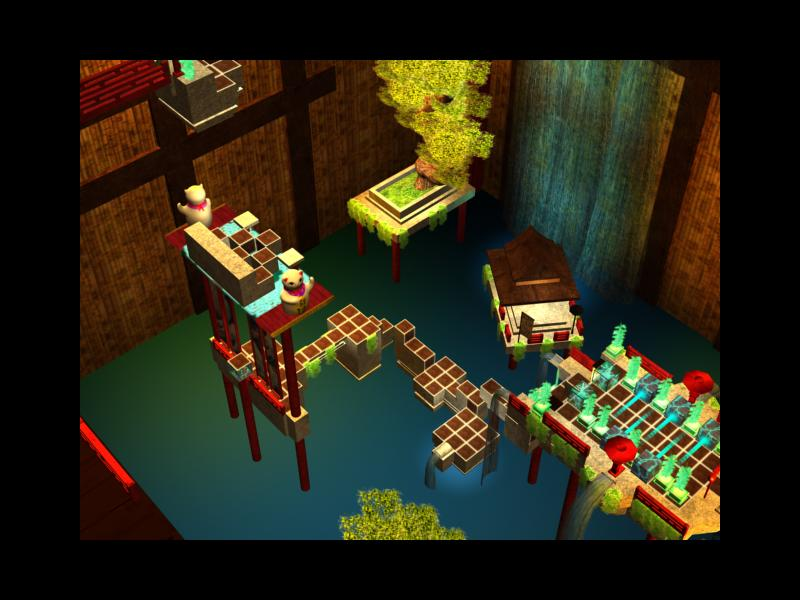

Kyub was initially a student game project. A puzzle platformer which mixes action and reflection where you control a cube climbing on walls, sticking on platforms or grabbing objects. Then a team member decided to take over and create a professional version. Kyub is not a student project anymore (official website).
Here is a short video to illustrate the gameplay.
My intention was to create a game focus on the gameplay. I chose a cube, a primitive shape, since I think everything should start in a simple way.
All game mechanics have been thought around it. I wanted to make a puzzle/platformer game where players must think before taking actions and go forward all of that without forgetting the fun aspect.

All this student project was made in my student year at Isart Digital. We were 4 game designers/programmers and 2 graphic artists. We used Virtools (no choice :( ), a protoype tools.
It was a very rich experience, I learned a lot and became familiar with all the 3D basics: 3D linear math (vector, quaternion, matrix), 3D transformations, 3D models and effects (mesh, material, shader), render passes, render priority, etc.
Kyub won a SACD prize for its originality and the student prize in our school.
